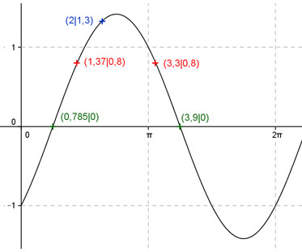
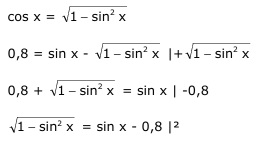
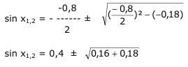

Aufgabe 216 Ergänzen Sie die Wertetabelle für x zwischen 0 und 2π: y = sin x - cos x x 2 1,37 oder 3,3 y 1,3 0,8 Amplitude = 1,414 = √2 (Berechnung siehe unten) ; Periode = 2π Berechnung der Nullstellen: 0 = sin x - cos x |+cos x sin x = cos x |:cos x sin x sin x ------- = 1 mit ------- = tan x cos x cos x tan x = 1 --> x = arc tan 1 = 0,785 gerundet = π/4 oder 45°. x1 = π/4 = 0,785 gerundet oder bei 45°. x2 = (π + π/4) = 3,9 gerundet oder bei 225°. Berechnung der Amplitude A: Sie tritt an den Stellen x = 45° + (225° - 45°)/2 = 135° oder (3/4)π oder bei (π/4 + π) = (5/4)π oder 225° auf. A = f(45°) = sin 45° - cos 45° = |sin 225° - cos 225°| = 1,414 = √2.  Funktionswert an einer Stelle x ermitteln: 2 * 180° x = 2 oder ---------- = 114,6° π y = f(2) = sin 2 - cos 2 = sin 114,6° - cos 114,6° = 0,909 - (-0,416) = 1,3 gerundet. Berechnung der x-Werte für y = f(x) = 0,8 f(x) = 0,8 eingesetzt, existiert zwischen 0 und π bzw. 0° und 180° und zwischen π und 2π bzw. 180° und 360° (siehe Graph). 0,8 = sin x - cos x  1 - sin2 x = sin2 x - 1,6 sin x + 0,64 |+sin2 x 1 = 2 sin2 x - 1,6 sin x + 0,64 |-1 2 sin2 x - 1,6 sin x - 0,36 = 0 |:2 sin2 x - 0,8 sin x - 0,18 = 0 p,q - Formel: p = -0,8 ; q = -0,18  sin x1,2 = 0,4 ± 0,58 sin x1 = 0,98 --> x1 = arc sin 0,98 = 1,37 sin x2 = - 0,18 --> x2 = arc sin - 0,18 = -0,18 Weil zwischendurch quadriert wurde, ist eine Probe nötig. Probe: Für x1: sin 1,37 - cos 1,37 = 0,8 ? 0,98 - 0,2 = 0,78 = 0,8 gerundet 1,18 Lösung Für x2: sin - 0,18 - cos - 0,18 = 0,8 ? -0,18 - 0,98 = -1,16 keine Lösung Die Funktionswerte liegen gleich weit von der Amplitudenstelle entfernt: 1,37 * 180° x1 = 1,37 gerundet oder ------------- = 78,5° π x2 = (π - 1,37) + π/2 = 3,3 oder 189° gerundet.